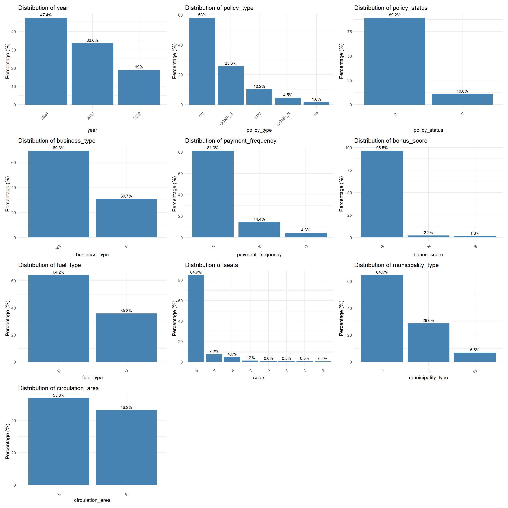
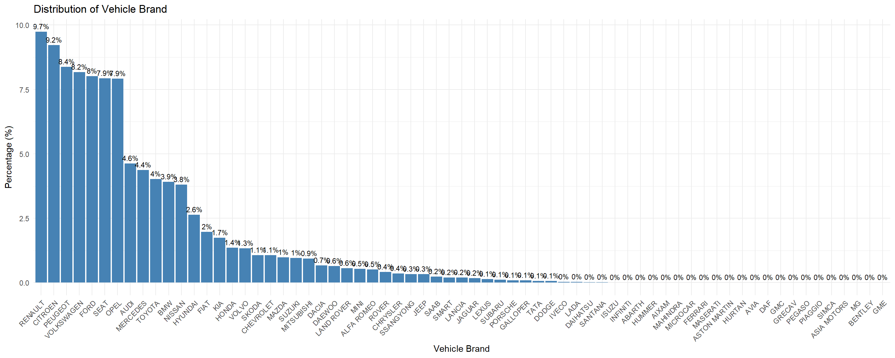
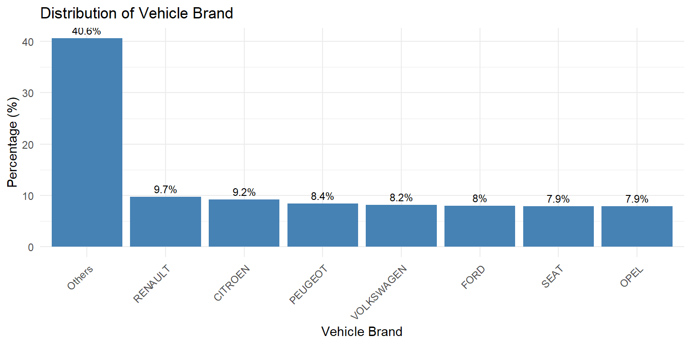

pacman::p_load(tidyverse, readxl, tidyr, kableExtra, psych, dplyr,
patchwork, corrplot, RColorBrewer, gganimate, ggrepel) Technical Report
1 Overview
1.1 Background
“Insurers often carry underperforming portfolios where the root causes of poor profitability and high volatility are unknown. Leveraging visual analytics can potentially help investigate trends in underlying loss drivers, while data enrichment using external data can help refine segmentation and underwriting strategy.” From Advanced analytics: unlocking new frontiers in P&C insurance.
However, the use of visual analytics to support data-driven analytical decision-making in the insurance industry has traditionally focused on dashboard reporting. This limitation is mainly due to the general lack of advanced analytical capabilities in commercial off-the-shelf data visualisation tools such as Tableau and Microsoft Power BI.
Using a real-world open-access motor vehicle insurance portfolio dataset and appropriate visual analytics libraries in R, this applied visual anaytics investigation requires you to demonstrate the potential value of visual analytics techniques for exploring and analysing numerical, categorical, and temporal variables. The objective is to gain deeper insights into data distributions and identifying key factors influencing the profitability and volatility of the insurance portfolio.

1.2 The Tasks
The specific tasks of this study are:
- Apply suitable univariate visual analytics techniques to explore the distributions and characteristics of numerical and categorical variables.
- Apply suitable bivariate visual analytics techniques to investigate and statistically validate factors influencing the profitability and volatility of the insurance portfolio.
2 Getting Started
2.1 Installing and loading the required libraries
The code chunk below uses the p_load() function in the pacman package to check if the packages are installed in the computer. If yes, they are then loaded into the R environment. If no, they are installed, and then loaded into the R environment.
2.2 Importing data
A real world motor vehicle insurance portfolio data set from a Spanish insurance company specialised in non-life insurance will be used in this study. The data set and its cookbook are available for download at Mendeley Data.
The dataset contains anonymised microdata on automobile insurance policies and covers the main operations of the non-life portfolio from January 2022 to December 2024. The database shows 354,140 records and 47 variables, where each row corresponds to a policy transaction and each column to a specific attribute of that transaction.
This dataset uses semicolon delimiters, we use read_delim() to deal with semicolon delimiters.
motoinsu <- read_delim(
"data/Motor_insurance_portfolio.csv",
delim = ";"
)3 Data wrangling
Out of a total of 47 attributes in the motoinsu tibble data frame, 29 of them are numerical data type (dbl - double) and 28 features are categorical data type (char - character).
Show the code
describe(motoinsu %>%
select(where(is.numeric)) # Only show numerical columns
) %>%
select(vars, min, max, mean, skew) # Only get desired columns vars min max mean skew
insured_id 1 1.00 185678.00 76044.50 0.47
year 2 2022.00 2024.00 2023.29 -0.53
driver_age 3 18.00 90.00 49.01 0.23
vehicle_age 4 0.00 68.00 25.92 0.19
age_driving_licence 5 0.00 80.00 22.99 2.14
vehicle_value 6 1630.12 374034.21 26977.44 2.19
seats 7 2.00 9.00 5.08 0.90
power_to_weight_ratio 8 0.00 64.81 12.33 1.06
total_premium 9 0.00 5107.64 296.72 2.43
liability_premium 10 0.00 2320.77 180.71 2.19
property_damage_premium 11 0.00 3736.73 73.52 3.52
theft_premium 12 0.00 1047.04 11.25 8.19
fire_premium 13 0.00 72.09 1.51 4.84
glass_premium 14 0.00 387.61 19.50 2.03
legal_protection_premium 15 0.00 175.06 8.27 1.27
occupants_premium 16 0.00 68.65 1.97 1.34
total_claims 17 0.00 18.00 0.22 4.71
liability_claims 18 0.00 8.00 0.11 4.29
liability_property_claims 19 0.00 8.00 0.09 3.86
liability_injury_claims 20 0.00 3.00 0.01 8.90
property_claims 21 0.00 15.00 0.06 9.38
theft_claims 22 0.00 2.00 0.01 14.43
fire_claims 23 0.00 1.00 0.00 59.48
glass_claims 24 0.00 3.00 0.03 5.89
legal_protection_claims 25 0.00 2.00 0.01 10.47
occupants_claims 26 0.00 1.00 0.00 90.73
total_incurred 27 0.00 571128.32 208.58 104.16
liability_incurred 28 0.00 561759.79 133.71 114.05
liability_property_incurred 29 0.00 34553.88 65.74 18.28
liability_injury_incurred 30 0.00 560025.59 67.96 126.58
property_incurred 31 0.00 27542.43 52.66 17.76
theft_incurred 32 0.00 40324.89 4.51 105.49
fire_incurred 33 0.00 28267.13 0.76 208.29
glass_incurred 34 0.00 4533.40 12.59 9.02
legal_protection_incurred 35 0.00 9889.85 3.32 45.48
occupants_incurred 36 0.00 69000.00 1.01 259.05
total_exposure 37 0.00 1.00 0.71 -0.67
liability_exposure 38 0.00 1.00 0.71 -0.67Show the code
var_desc <- read_excel("data/Descriptive_of_variables.xlsx") %>%
fill(everything(), .direction = "down") %>%
group_by(Variables, Group) %>%
summarise(Description = paste(Description, collapse = " "), .groups = "drop")
var_desc %>%
kable() %>%
kable_styling(bootstrap_options = c("striped", "hover", "condensed"),
full_width = FALSE)| Variables | Group | Description |
|---|---|---|
| age_driving_licence | Driver and vehicle characteristics | Year in which the insured obtained the driving licence. Note: this variable records the calendar year of licence issuance and does not measure the length of time the licence has been held. |
| bonus_score | Policy and insured characteristics | Indicator of the policyholder’s past claims experience: - G: Positive reflects a favourable claims history - N: indicates a neutral profile - B: had a negative denotes a poor claims history. |
| business_type | Policy and insured characteristics | Classification of the policy according to its business origin. - NB: new_business - P: portfolio |
| circulation_area | Driver and vehicle characteristics | Indicates the predominant circulation environment of the vehicle: - U: urban - R: rural |
| driver_age | Driver and vehicle characteristics | Age of the main driver associated with the policy, measured in years. |
| fire_claims | Exposure, claims and incurred | Count of fire-related claims. |
| fire_incurred | Exposure, claims and incurred | Total incurred cost for fire claims. |
| fire_premium | Premiums | Premium for fire coverage. |
| fuel_type | Driver and vehicle characteristics | Indicates the vehicle’s fuel type. In this dataset, only two categories are kept: - D: diesel - G: gasoline |
| glass_claims | Exposure, claims and incurred | Number of glass-related claims. |
| glass_incurred | Exposure, claims and incurred | Total incurred cost for glass claims. |
| glass_premium | Premiums | Premium for glass coverage. |
| insured_id | Policy and insured characteristics | Unique identifier assigned to each policy number. It assigns a sequential ID based on the first appearance of each policy number; repeated policy numbers receive the same ID. |
| legal_protection_claims | Exposure, claims and incurred | Number of legal protection claims. |
| legal_protection_incurred | Exposure, claims and incurred | Total incurred cost for legal protection claims. |
| legal_protection_premium | Premiums | Premium for legal protection coverage. |
| liability_claims | Exposure, claims and incurred | Total number of liability claims reported under the policy. |
| liability_exposure | Exposure, claims and incurred | Amount of exposure associated with liability coverage. |
| liability_incurred | Exposure, claims and incurred | Total incurred cost (paid + reserved) for all liability claims. |
| liability_injury_claims | Exposure, claims and incurred | Number of liability claims involving bodily injury. |
| liability_injury_incurred | Exposure, claims and incurred | Total incurred cost for liability claims involving bodily injury. |
| liability_premium | Premiums | Premium charged for third-party liability coverage. |
| liability_property_claims | Exposure, claims and incurred | Number of liability claims related to material or property damage. |
| liability_property_incurred | Exposure, claims and incurred | Total incurred cost for liability claims involving material or property damage. |
| municipality_type | Driver and vehicle characteristics | Geographic classification of the policyholder’s municipality: - I: inland - C: coastal - IS: islands |
| occupants_claims | Exposure, claims and incurred | Number of claims under this coverage. |
| occupants_incurred | Exposure, claims and incurred | Total incurred cost under this coverage. |
| occupants_premium | Premiums | Premium for personal-injury coverage of vehicle occupants. |
| payment_frequency | Policy and insured characteristics | Indicates the policy’s billing frequency: - A: annual - S: semiannual - Q: quarterly |
| policy_status | Policy and insured characteristics | Indicates whether the policy was active (A) or cancelled (C) at the time of analysis. |
| policy_type | Policy and insured characteristics | Categorical variable describing the main coverage structure of the motor insurance policy. The original detailed combinations have been grouped into broader, actuarially meaningful categories. - TP: Basic third-party liability coverage only. - TPG: Third-party liability with glass coverage. - CC: Third-party liability combined with two or more additional coverages, such as theft, fire, total loss or glass. - COMP_E: comprehensive with excess. - COMP_N: comprehensive without excess |
| power_to_weight_ratio | Driver and vehicle characteristics | Approximate weight-to-power ratio of the vehicle (kg per horsepower), used as a proxy for performance characteristics. |
| property_claims | Exposure, claims and incurred | Count of property damage claims. |
| property_damage_premium | Premiums | Premium corresponding to property damage coverage. |
| property_incurred | Exposure, claims and incurred | Total incurred cost for property damage claims. |
| seats | Driver and vehicle characteristics | Number of seats available in the insured vehicle. |
| theft_claims | Exposure, claims and incurred | Number of theft-related claims. |
| theft_incurred | Exposure, claims and incurred | Total incurred cost for theft claims. |
| theft_premium | Premiums | Premium associated with theft coverage. |
| total_claims | Exposure, claims and incurred | Indicates the total number of claims reported for the policy during the exposure period. Typical values range from 0 (no claims) to several claims per contract. |
| total_exposure | Exposure, claims and incurred | Represents the effective time-on-risk for each policy, expressed in policy years. Values range from 0 to 1 for partial-year exposure, and may exceed 1 if the contract covers more than one year. |
| total_incurred | Exposure, claims and incurred | Represents the total incurred cost of claims for the policy, including paid amounts and outstanding reserves. Values are typically zero for policies without losses and positive when claims exist. |
| total_premium | Premiums | Total premium of the policy, calculated as the sum of all individual coverage premiums. |
| vehicle_age | Driver and vehicle characteristics | Age of the insured vehicle, also measured in years. |
| vehicle_brand | Driver and vehicle characteristics | Brand of the insured vehicle as reported in the policy data. |
| vehicle_value | Driver and vehicle characteristics | Declared insured value of the vehicle. Some entries are missing |
| year | Policy and insured characteristics | Calendar year |
head(motoinsu, n=3)# A tibble: 3 × 47
insured_id year policy_type policy_status business_type payment_frequency
<dbl> <dbl> <chr> <chr> <chr> <chr>
1 1 2022 COMP_E C NB A
2 2 2022 COMP_E A P A
3 2 2023 COMP_E A P A
# ℹ 41 more variables: bonus_score <chr>, driver_age <dbl>, vehicle_age <dbl>,
# age_driving_licence <dbl>, fuel_type <chr>, vehicle_value <dbl>,
# seats <dbl>, power_to_weight_ratio <dbl>, vehicle_brand <chr>,
# municipality_type <chr>, circulation_area <chr>, total_premium <dbl>,
# liability_premium <dbl>, property_damage_premium <dbl>,
# theft_premium <dbl>, fire_premium <dbl>, glass_premium <dbl>,
# legal_protection_premium <dbl>, occupants_premium <dbl>, …3.1 Conversing datatype
We realize that we need to change data type of some variables as follows.
motoinsu <- motoinsu %>%
mutate(
# from dbl to chr (identifier)
insured_id = as.character(insured_id),
# from dbl to fac (categorical)
across(c(year, policy_type, policy_status, business_type,
payment_frequency, bonus_score, fuel_type, seats,
vehicle_brand, municipality_type, circulation_area),
as.factor),
# from char to dbl
across(c(liability_premium, property_damage_premium,
theft_premium, fire_premium, glass_premium,
legal_protection_premium, occupants_premium,
total_exposure, liability_exposure),
as.double)
)
Tip
- dbl stands for: double, numbers with decimals.
- fct: factor, text with fixed, known categories. Factor uses less memory, which matters in such large database.
- char: character, plain text without predefined categories.
After changing data type, we have 1 identifier, 11 categorical variables and 35 numerical variables.
3.2 Handling missing values
There are six features having missing values. Although all of these rates are small, under 1%, we treat them differently.
colSums(is.na(motoinsu)) %>%
.[. > 0] vehicle_age age_driving_licence fuel_type vehicle_value
2 2 1287 513 colMeans(is.na(motoinsu)) %>% # Caculate missing rate in each column
round(5) %>%
.[. > 0] # Filter ratio > 0 vehicle_age age_driving_licence fuel_type vehicle_value
0.00001 0.00001 0.00363 0.00145 vehicle_age,age_driving_licenceonly lack two values, we drop these missing rows.fire_incurred,occupants_incurredhaving missing values likely means no claim, in insurance context. Therefore we can change to zero.fuel_type,vehicle_valuehave more missing values, which make I consider between using mode/medium or remove missing rows. Because they are seem important features, it is risky to impute data. This issue should be reported to the relevant stakeholders.
motoinsu <- motoinsu %>%
drop_na(vehicle_age, age_driving_licence, fuel_type, vehicle_value ) %>%
mutate(
fire_incurred = replace_na(fire_incurred, 0),
occupants_incurred = replace_na(occupants_incurred, 0)
)
# Check after modification
colSums(is.na(motoinsu)) %>%
.[. > 0]named numeric(0)3.3 Checking outliers
To check whether we need to remove abnormal records, we use Z-score. It measures how many standard deviations a value is away from the mean.
z = (value - mean) / standard deviation
In general statistics, any data point with an absolute Z-score greater than 3 is widely flagged as an potential outlier, some researchs use threshold 3.5 (1.3.5.17. Detection of Outliers (n.d.)). However in insurance field with heavy-tailed distributions, values far beyond 6 standard deviations occur with non-negligible probability (Embrechts and Schmidli (1994)).
Show the code
# Check all numeric variables at once
numeric_vars <- motoinsu %>%
select(where(is.numeric)) %>%
names()
outlier_summary <- map_dfr(numeric_vars, function(var) {
x <- motoinsu[[var]]
x_nonzero <- x[x > 0] # for skewed insurance data, check non-zero only
Q1 <- quantile(x, 0.25, na.rm = TRUE)
Q3 <- quantile(x, 0.75, na.rm = TRUE)
IQR_val <- Q3 - Q1
tibble(
variable = var,
max_val = max(x, na.rm = TRUE),
p999 = quantile(x, 0.999, na.rm = TRUE),
max_z = if(length(x_nonzero) > 1) max(abs(scale(x_nonzero))) else NA,
n_over_3sd = if(length(x_nonzero) > 1) sum(abs(scale(x_nonzero)) > 3) else NA,
pct_over_3sd = if(length(x_nonzero) > 1) round(mean(abs(scale(x_nonzero)) > 3) * 100, 3) else NA,
iqr_fence = Q3 + 3 * IQR_val,
n_beyond_iqr = sum(x > Q3 + 3 * IQR_val, na.rm = TRUE)
)
})
outlier_summary %>%
kable(format.args = list(big.mark = ",", scientific = FALSE)) %>%
kable_styling(bootstrap_options = c("striped", "hover", "condensed"))| variable | max_val | p999 | max_z | n_over_3sd | pct_over_3sd | iqr_fence | n_beyond_iqr |
|---|---|---|---|---|---|---|---|
| driver_age | 90.00000 | 81.000000 | 3.398199 | 27 | 0.008 | 115.000000 | 0 |
| vehicle_age | 68.00000 | 56.000000 | 3.631001 | 24 | 0.007 | 89.000000 | 0 |
| age_driving_licence | 80.00000 | 58.000000 | 8.965607 | 7,424 | 2.107 | 43.000000 | 6,328 |
| vehicle_value | 374,034.20985 | 105,294.000000 | 28.260025 | 5,592 | 1.587 | 73,162.425000 | 3,033 |
| power_to_weight_ratio | 64.81000 | 22.800000 | 21.245611 | 2,209 | 0.627 | 22.680000 | 368 |
| total_premium | 5,107.63987 | 2,023.750471 | 21.199671 | 5,140 | 1.459 | 1,099.560645 | 3,322 |
| liability_premium | 2,320.76510 | 1,103.984594 | 16.509734 | 5,005 | 1.421 | 673.681782 | 2,647 |
| property_damage_premium | 3,336.72890 | 1,342.728400 | 15.696647 | 1,667 | 1.539 | 328.026367 | 23,385 |
| theft_premium | 1,047.03645 | 201.746258 | 52.337092 | 5,184 | 1.669 | 48.687592 | 11,623 |
| fire_premium | 72.08914 | 22.728305 | 30.473847 | 5,975 | 1.924 | 6.377333 | 11,522 |
| glass_premium | 387.60796 | 122.071526 | 21.791162 | 5,258 | 1.517 | 85.399483 | 2,197 |
| legal_protection_premium | 175.05605 | 33.785978 | 27.620985 | 4,042 | 1.147 | 32.402998 | 454 |
| occupants_premium | 68.64614 | 6.319273 | 50.435347 | 661 | 0.188 | 7.647273 | 63 |
| total_claims | 18.00000 | 6.000000 | 16.053260 | 1,416 | 2.805 | 0.000000 | 50,476 |
| liability_claims | 8.00000 | 3.000000 | 13.183576 | 792 | 2.593 | 0.000000 | 30,541 |
| liability_property_claims | 8.00000 | 2.000000 | 20.823683 | 265 | 0.885 | 0.000000 | 29,933 |
| liability_injury_claims | 3.00000 | 1.000000 | 13.260422 | 102 | 2.146 | 0.000000 | 4,752 |
| property_claims | 15.00000 | 5.000000 | 9.798120 | 159 | 1.285 | 0.000000 | 12,369 |
| theft_claims | 2.00000 | 1.000000 | 6.622250 | 41 | 2.228 | 0.000000 | 1,840 |
| fire_claims | 1.00000 | 0.000000 | NaN | NA | NA | 0.000000 | 100 |
| glass_claims | 3.00000 | 2.000000 | 9.742236 | 413 | 3.717 | 0.000000 | 11,112 |
| legal_protection_claims | 2.00000 | 1.000000 | 7.563544 | 58 | 1.718 | 0.000000 | 3,377 |
| occupants_claims | 1.00000 | 0.000000 | NaN | NA | NA | 0.000000 | 43 |
| total_incurred | 571,128.31800 | 16,968.783301 | 89.021023 | 233 | 0.555 | 0.000000 | 41,978 |
| liability_incurred | 561,759.78550 | 14,459.047629 | 65.834122 | 113 | 0.548 | 0.000000 | 20,633 |
| liability_property_incurred | 34,553.87750 | 4,880.463150 | 25.822197 | 316 | 1.644 | 0.000000 | 19,219 |
| liability_injury_incurred | 560,025.58550 | 12,113.968452 | 33.026573 | 46 | 0.968 | 0.000000 | 4,750 |
| property_incurred | 27,542.43100 | 5,224.678689 | 15.397574 | 210 | 1.699 | 0.000000 | 12,358 |
| theft_incurred | 40,324.88800 | 764.429886 | 15.503976 | 32 | 1.739 | 0.000000 | 1,840 |
| fire_incurred | 28,267.12650 | 0.000000 | 6.231853 | 2 | 2.020 | 0.000000 | 99 |
| glass_incurred | 4,533.40350 | 936.504432 | 15.856483 | 128 | 1.152 | 0.000000 | 11,110 |
| legal_protection_incurred | 9,889.85050 | 818.832856 | 18.729353 | 34 | 1.022 | 0.000000 | 3,326 |
| occupants_incurred | 69,000.00000 | 0.000000 | 3.694334 | 2 | 4.651 | 0.000000 | 43 |
| total_exposure | 1.00000 | 1.000000 | 2.159497 | 0 | 0.000 | 2.668493 | 0 |
| liability_exposure | 1.00000 | 1.000000 | 2.159497 | 0 | 0.000 | 2.668493 | 0 |
So we are safe to move on further analysis. # Visual Analysis
3.4 Univariate Analysis
We demonstrate all distributions by each variable (categorical and numerical) to have a comprehensive analysis.
3.4.1 Categorical variables
Among 11 categorical columns, vehicle_brand has too many distinct values. Therefore we will visualize its distribution and impute it later. Following is the distributions of 10 categorical features.
We mainly use histogram chart to demonstrate distrubutions in univariate analysis.
Show the code
# gom_bar(): counts rows automatically
# fct_infreq: reorder factor levels based on the frequency of values
cat_vars <- c("year", "policy_type", "policy_status", "business_type",
"payment_frequency", "bonus_score",
"fuel_type", "seats",
"municipality_type", "circulation_area")
plots <- lapply(cat_vars, function(col) {
ggplot(motoinsu, aes(x = fct_infreq(!!sym(col)))) +
geom_bar(aes(y = after_stat(count/sum(count) * 100)), fill = "steelblue") +
geom_text(aes(y = after_stat(count/sum(count) * 100),
label = paste0(round(after_stat(count/sum(count) * 100), 1), "%")),
stat = "count", vjust = -0.5, size = 3) +
labs(title = paste("Distribution of", col), x = col, y = "Percentage (%)") +
theme_minimal() +
theme(axis.text.x = element_text(angle = 45, hjust = 1))
})
wrap_plots(plots, ncol = 3)
NoteInsights: Categorical variables
Policy & Business Characteristics
- Year: Data is unbalanced - 2024 (47.4%) has the most records, likely because policies accumulate over time. Dataset covers 3 years of a growing portfolio.
- Policy type: CC dominates (58%), meaning most customers choose combined third-party + additional coverage. Pure TP is rare (1.6%) - customers prefer more protection.
- Policy status: 89.2% active (A) vs 10.8% cancelled (C) - relatively low cancellation rate, portfolio is stable.
- Business type: 69.3% new business (NB) vs 30.7% portfolio (P), which means the insurer is heavily acquiring new customers rather than renewing existing ones. This is a risk signal, new customers have unknown claims history.
- Payment frequency: 81.3% pay annually (A) - most customers prefer single payment, simplifying cash flow for the insurer.
- Bonus score: 96.5% have score G (good/favorable claims history) - the portfolio is dominated by low-risk customers historically.
Vehicle Characteristics
- Fuel type: 64.2% diesel (D) vs 35.8% gasoline (G) - diesel vehicles dominate, which may have different risk profiles.
- Seats: 84.9% have 5 seats - standard passenger cars dominate, very homogeneous portfolio.
Geographic
- Municipality type: 64.6% type I (Inland) where typically have higher accident/theft risk than coastal and island areas.
- Circulation area: Nearly split between U (53.8%) and R (46.2%) - urban vs rural almost balanced, suggesting national coverage.
Vehicle brand distribution show high fragmentation with top brand ~10%, many brands with <1%. We will combine all brands excluding RENAULT, CITROEN, PEUGEOT, VOLKSWAGEN, FORD, SEAT, and OPEL.
Show the code
# gom_bar(): counts rows automatically
# fct_infreq: reorder factor levels based on the frequency of values
ggplot(motoinsu, aes(x = fct_infreq(vehicle_brand))) +
geom_bar(aes(y = after_stat(count/sum(count) * 100)), fill = "steelblue") +
geom_text(aes(y = after_stat(count/sum(count) * 100),
label = paste0(round(after_stat(count/sum(count) * 100), 1), "%")),
stat = "count", vjust = -0.5, size = 3) +
labs(title = "Distribution of Vehicle Brand", x = "Vehicle Brand", y = "Percentage (%)") +
theme_minimal() +
theme(axis.text.x = element_text(angle = 45, hjust = 1))
Then plot them by distribution.
Show the code
# Bin
top_brands <- c("RENAULT", "CITROEN", "PEUGEOT", "VOLKSWAGEN", "FORD", "SEAT", "OPEL")
motoinsu <- motoinsu %>%
mutate(vehicle_brand_grouped = fct_other(vehicle_brand,
keep = top_brands,
other_level = "Others"))
# Draw chart
ggplot(motoinsu, aes(x = fct_infreq(vehicle_brand_grouped))) +
geom_bar(aes(y = after_stat(count/sum(count) * 100)), fill = "steelblue") +
geom_text(aes(y = after_stat(count/sum(count) * 100),
label = paste0(round(after_stat(count/sum(count) * 100), 1), "%")),
stat = "count", vjust = -0.5, size = 3) +
labs(title = "Distribution of Vehicle Brand", x = "Vehicle Brand", y = "Percentage (%)") +
theme_minimal() +
theme(axis.text.x = element_text(angle = 45, hjust = 1))
NoteInsights: Vehicle brand
- The near-equal spread among top brands means risk is not concentrated in any single brand’s characteristics.
- Among top 7, French brands (RENAULT, CITROEN, PEUGEOT) collectively represent ~27%, reflecting Spain’s strong preference for French automobiles.
- SEAT’s presence (~7.9%) is notable as a Spanish domestic brand, expected in a Spanish portfolio.
- The large “Others” group (40.6%) warrants further investigation - it contains luxury brands (BMW, MERCEDES, AUDI) and niche brands that may carry higher vehicle values and different risk profiles.
References
1.3.5.17. Detection of Outliers. n.d. https://www.itl.nist.gov/div898/handbook/eda/section3/eda35h.htm.
Embrechts, Paul, and Hanspeter Schmidli. 1994. “Modelling of Extremal Events in Insurance and Finance.” Zeitschrift Für Operations Research 39 (1): 1–34. https://doi.org/10.1007/BF01440733.